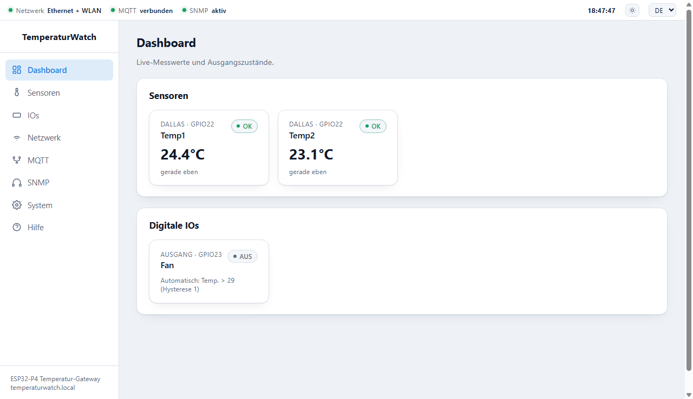
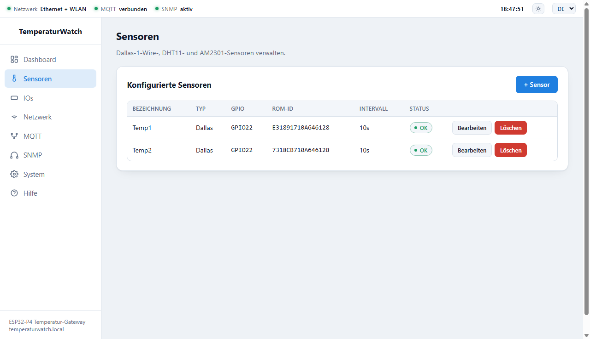
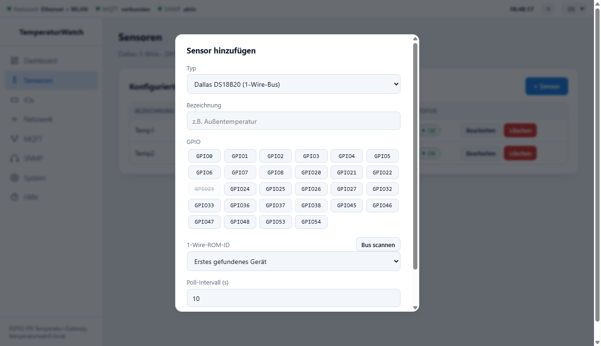
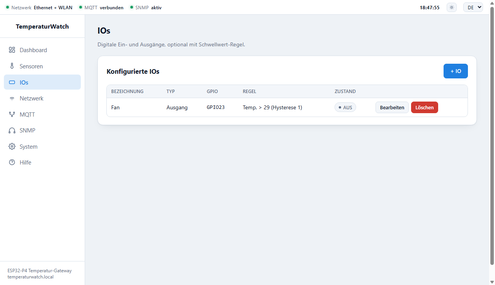
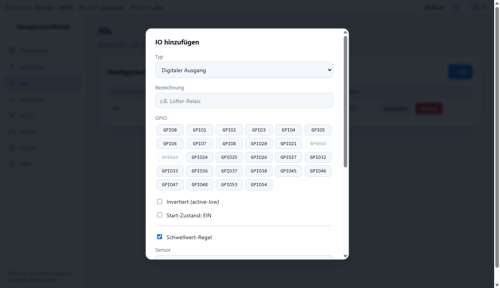
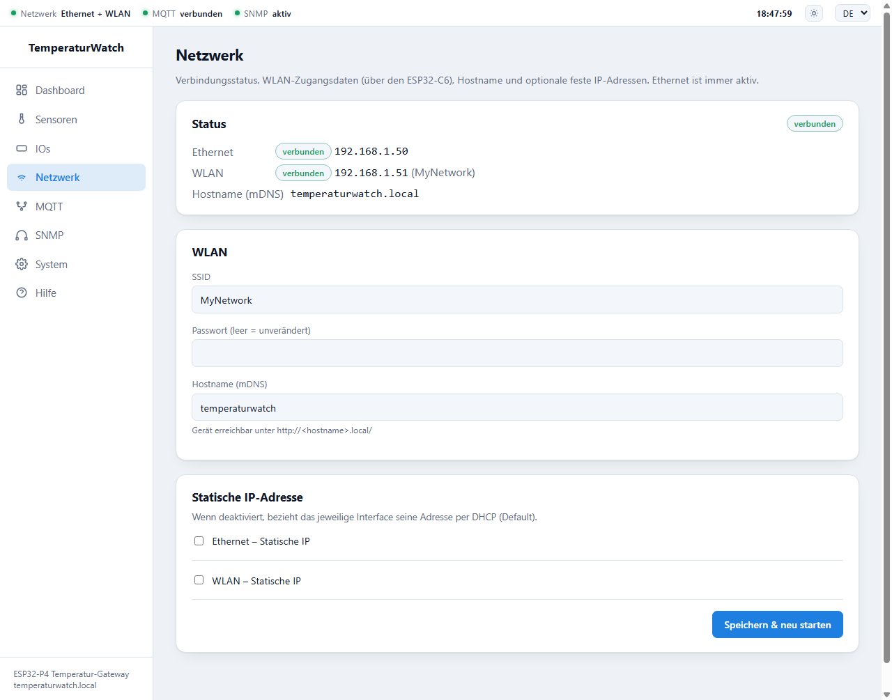
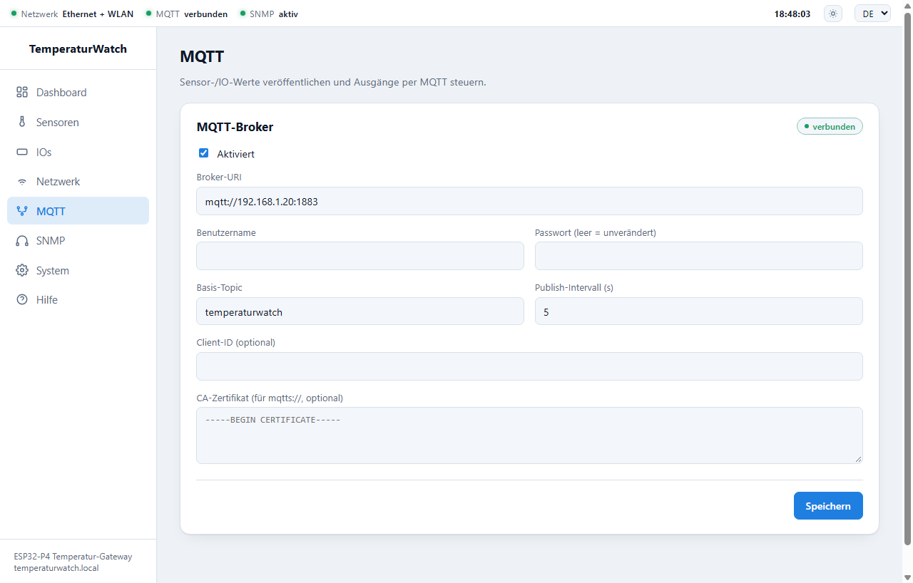
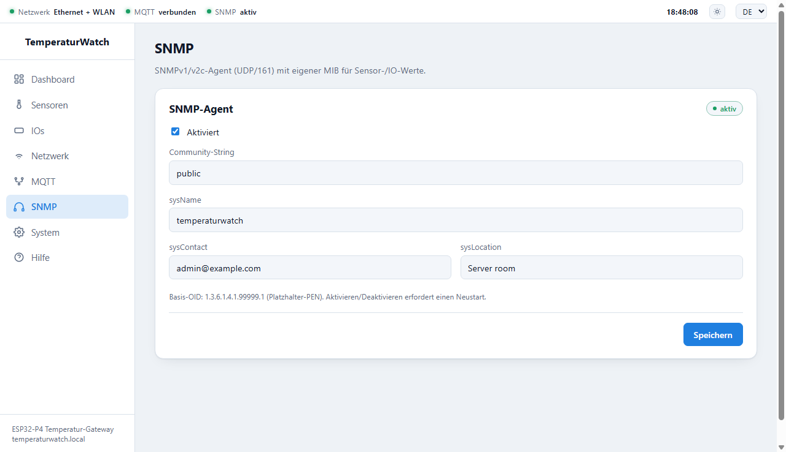
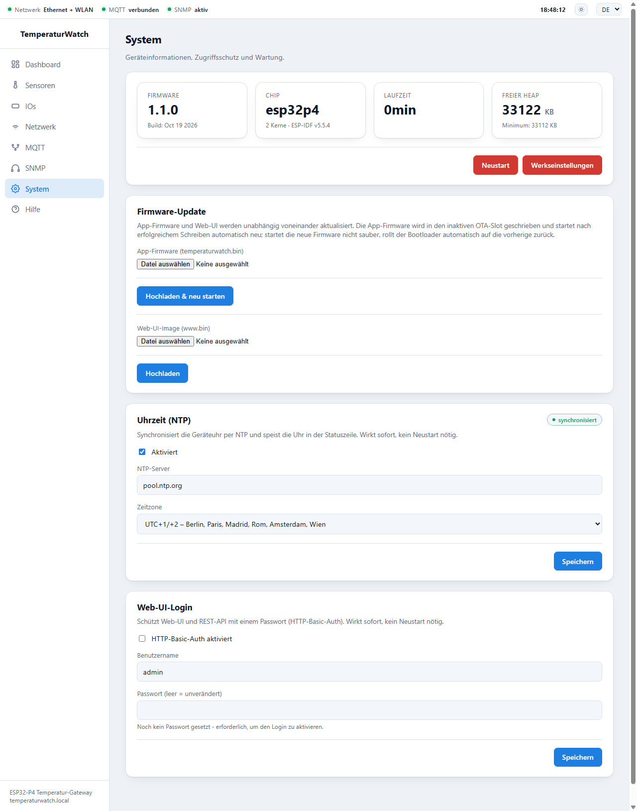

TemperaturWatch ist ein Temperatur- und Feuchte-Gateway auf Basis des Waveshare ESP32-P4-WIFI6-POE-ETH. Es liest Dallas-DS18B20-, DHT11- und AM2301-Sensoren aus, schaltet digitale Ausgänge (z. B. Relais für Lüfter oder Alarmgeber) auch automatisch per Schwellwert-Regel und stellt alle Werte per Weboberfläche, REST-API, MQTT und SNMP bereit. Dieses Handbuch richtet sich an Administratoren, die das Gerät installieren, in die Netzwerk- und Monitoring-Umgebung einbinden und betreiben.
| Bereich | Funktion |
|---|---|
| Sensoren | Dallas DS18B20 (1-Wire, mehrere Sensoren an einem Pin), DHT11, AM2301/DHT21/DHT22; bis zu 32 Sensoren |
| Digitale IOs | Ausgänge und Eingänge, optional invertiert; Ausgänge manuell oder per Schwellwert-Regel mit Hysterese; bis zu 32 Einträge |
| Netzwerk | Ethernet (immer aktiv) und WLAN (über den ESP32-C6-Co-Prozessor), DHCP oder feste IP je Interface, mDNS-Hostname |
| Schnittstellen | Weboberfläche, REST-API, MQTT (optional TLS), SNMPv1/v2c-Agent |
| Uhrzeit | NTP-Synchronisation mit wählbarer Zeitzone |
| Wartung | Firmware- und Web-UI-Update über das Netzwerk (OTA) mit automatischem Rollback, optionales Login |
| Sprachen | Weboberfläche und Hilfe in Deutsch und Englisch, Tag-/Nachtmodus |
Das Board trägt einen ESP32-P4 (32 MB Flash, 32 MB PSRAM). WLAN/Bluetooth stellt ein onboard ESP32-C6-Co-Prozessor bereit, Ethernet läuft über den internen MAC mit einem IP101-PHY und ist ohne Konfiguration nutzbar. Sensoren und IOs können nur an die 28 GPIOs der 40-poligen Stiftleiste angeschlossen werden; alle anderen GPIOs sind intern belegt (Ethernet, WLAN-Link, SD-Karte, USB, Display, Audio) und werden von der Firmware abgelehnt. Alle GPIOs arbeiten mit 3,3 V.
| Pin | Signal | Pin | Signal | Pin | Signal | Pin | Signal |
|---|---|---|---|---|---|---|---|
| 1 | 5V | 11 | GPIO22 | 21 | GPIO1 | 31 | GPIO54 |
| 2 | 3V3 | 12 | GPIO21 | 22 | GPIO2 | 32 | GPIO26 |
| 3 | 5V | 13 | GND | 23 | GPIO36 | 33 | GND |
| 4 | GPIO7 (I2C SDA) | 14 | GPIO20 | 24 | GPIO0 | 34 | GPIO48 |
| 5 | GND | 15 | GPIO5 | 25 | GPIO32 | 35 | GPIO46 |
| 6 | GPIO8 (I2C SCL) | 16 | GPIO6 | 26 | GND | 36 | GPIO53 |
| 7 | GPIO37 (Debug-UART TX) | 17 | GPIO4 | 27 | GPIO25 | 37 | GPIO27 |
| 8 | GPIO23 | 18 | 3V3 | 28 | GPIO24 | 38 | GPIO47 |
| 9 | GPIO38 (Debug-UART RX) | 19 | GND | 29 | GND | 39 | GPIO45 |
| 10 | GND | 20 | GPIO3 | 30 | GPIO33 | 40 | GND |
GPIO7/8 (I2C) und GPIO37/38 (Debug-UART) bleiben zuweisbar, sind aber als Standardfunktion markiert. Im Web-UI werden bereits vergebene GPIOs durchgestrichen dargestellt.
Ein fertiges Board muss nur einmal per USB geflasht werden; alle weiteren Updates laufen über das Netzwerk (Kapitel 10). Die fünf Dateien (bootloader.bin, partition-table.bin, ota_data_initial.bin, temperaturwatch.bin, www.bin) stehen auf der GitHub-Release-Seite. Alle Dateien in einen Ordner legen, das Board per USB anschließen und ausführen (Port anpassen, bei Bedarf python -m esptool statt esptool):
python -m esptool --chip esp32p4 -b 460800 --before default_reset --after hard_reset write_flash \ --flash_mode dio --flash_size 32MB --flash_freq 40m \ 0x2000 bootloader.bin 0x8000 partition-table.bin 0x10000 ota_data_initial.bin \ 0x20000 temperaturwatch.bin 0x820000 www.bin
Die Weboberfläche ist in der Firmware eingebaut und benötigt keine Cloud und keine Zusatzsoftware. Links befindet sich die Navigation (Dashboard, Sensoren, IOs, Netzwerk, MQTT, SNMP, System, Hilfe), oben die Statuszeile.

| Element der Statuszeile | Bedeutung |
|---|---|
| Netzwerk | Zeigt Ethernet, WLAN oder Ethernet + WLAN, sobald das jeweilige Interface eine IP-Adresse hat, sonst keine IP |
| MQTT | verbunden, getrennt (aktiviert, aber ohne Broker-Verbindung) oder deaktiviert |
| SNMP | aktiv, Neustart nötig (aktiviert, aber noch nicht gestartet) oder deaktiviert |
| Uhrzeit | Geräteuhrzeit in der eingestellten Zeitzone; gedimmt dargestellt, solange noch nicht per NTP synchronisiert (Tooltip mit Datum) |
| Sonnen-Symbol | Umschalter Tag-/Nachtmodus; die Wahl wird im Browser gespeichert |
| EN / DE | Sprache der Weboberfläche und der Hilfe; Auswahl wird im Browser gespeichert, ?lang=de in der URL hat Vorrang |
Die Hilfe enthält die REST-API-, MQTT- und PRTG-Anleitungen direkt auf dem Gerät – auch ohne Internetzugang lesbar.
Das Dashboard zeigt alle Sensoren (Typ, GPIO, Bezeichnung, Messwert, Alter der Messung, Status) und alle IOs und aktualisiert sich alle vier Sekunden. Ausgänge ohne Regel lassen sich direkt per Knopf ein- und ausschalten; bei Ausgängen mit aktiver Schwellwert-Regel steht stattdessen die Regel („Automatisch: …") und manuelles Schalten ist gesperrt.
| Sensor-Status | Bedeutung |
|---|---|
| wartet | Noch keine Messung seit dem Start bzw. Anlegen |
| OK | Letzte Messung erfolgreich |
| Fehler | Letzte Messung fehlgeschlagen (Verkabelung, Sensor, Pull-up – siehe Kapitel 13) |

| Typ | Hinweise |
|---|---|
| Dallas DS18B20 | 1-Wire-Bus. Mehrere Dallas-Sensoren dürfen sich denselben GPIO teilen und werden über ihre ROM-ID unterschieden. Liefert nur Temperatur. |
| DHT11 | Temperatur und Luftfeuchte, grobe Auflösung. Ein Sensor pro GPIO. |
| AM2301 / DHT21 / DHT22 | Temperatur und Luftfeuchte, höhere Genauigkeit. Ein Sensor pro GPIO. |


| Einstellung | Bedeutung |
|---|---|
| Typ | Digitaler Ausgang oder Digitaler Eingang (Eingänge nutzen einen internen Pull-up, ohne Entprellung) |
| Invertiert (active-low) | Kehrt die Logik um; „EIN" entspricht dann einem Low-Pegel am Pin |
| Start-Zustand: EIN | Zustand eines Ausgangs direkt nach dem Booten |
| Schwellwert-Regel | Schaltet einen Ausgang automatisch anhand eines Sensorwerts (siehe unten) |

Eine Regel verknüpft einen Sensor und seinen Messwert (Temperatur oder Luftfeuchte) mit einer Bedingung (>, ≥, <, ≤) und einem Schwellwert. Die Hysterese verhindert schnelles Ein-/Ausschalten (Relais-Klappern) nahe am Schwellwert:
Solange eine Regel aktiv ist, übernimmt sie die Steuerung des Ausgangs; manuelles Schalten (Web-UI, REST-API, MQTT) wird abgelehnt. Liefert der Sensor keine gültige Messung, ändert die Regel den Ausgang nicht. Um manuell zu schalten, die Regel entfernen.

Das Status-Panel zeigt je Interface den Verbindungsstatus mit der aktuellen IP-Adresse sowie den mDNS-Hostnamen. Ethernet und WLAN können gleichzeitig aktiv sein und haben dann getrennte Adressen.
| Einstellung | Bedeutung |
|---|---|
| SSID / Passwort | Zugangsdaten für das WLAN (nur 2,4 GHz). Leeres Passwortfeld = bisheriges Passwort bleibt erhalten. Ohne SSID bleibt WLAN inaktiv. |
| Hostname (mDNS) | Das Gerät ist unter http://<hostname>.local/ erreichbar (max. 31 Zeichen) |
| Statische IP | Je Interface getrennt aktivierbar: IP-Adresse, Subnetzmaske, Gateway, optional DNS-Server. Deaktiviert = DHCP. |
Speichern & neu starten speichert die Einstellungen und startet das Gerät neu – Netzwerk-Änderungen wirken erst nach dem Neustart.

| Topic (unter Basis-Topic) | Richtung | Inhalt |
|---|---|---|
| <base>/status | Gerät → Broker | online / offline (retained, Last Will) |
| <base>/sensor/<id>/temperature_c | Gerät → Broker | Temperatur, z. B. 21.50 |
| <base>/sensor/<id>/humidity_pct | Gerät → Broker | Luftfeuchte (nur DHT/AM2301) |
| <base>/io/<id>/state | Gerät → Broker | ON / OFF (retained) |
| <base>/io/<id>/set | Broker → Gerät | ON/OFF/1/0/true/false schaltet einen Ausgang (nicht bei aktiver Regel) |
Details und Beispiele (Home Assistant, Node-RED, TLS) enthält die MQTT-Anleitung in der Hilfe bzw. unter docs/MQTT_SETUP.md.

Der SNMPv1/v2c-Agent lauscht auf UDP-Port 161. Das Aktivieren oder Deaktivieren erfordert einen Neustart; eine Änderung der Community oder der Systemangaben (sysName, sysContact, sysLocation) wirkt sofort. Die Standard-Community ist public – für den Produktivbetrieb ändern.
| OID (Basis 1.3.6.1.4.1.99999.1) | Inhalt |
|---|---|
| .2.1.0 | sensorCount |
| .2.2.1.{1..8}.<n> | sensorTable: Index, ID, Label, Typ, Temperatur×10, Feuchte×10 (−1 = n/a), gültig, Alter (s) |
| .3.1.0 | ioCount |
| .3.2.1.{1..5}.<n> | ioTable: Index, ID, Label, Typ, Zustand |
| .1.1.0 … .1.5.0 | Systemangaben (privat); zusätzlich die Standard-MIB-II-Gruppe 1.3.6.1.2.1.1.* |
Monitoring-Anbindung: Eine Schritt-für-Schritt-Anleitung für PRTG (ohne Plugin, mit „SNMP Custom Table") liegt in der Hilfe bzw. unter docs/PRTG_SETUP.md; für CheckMK gibt es ein fertiges Plugin unter contrib/checkmk/. Die Geräteerkennung funktioniert, weil das Gerät neben der privaten MIB auch die Standard-MIB-II-Systemgruppe (inkl. sysObjectID) beantwortet.

Die Karten zeigen Firmware-Version und Build-Datum, Chip, Laufzeit und freien Heap. Neustart startet das Gerät neu, die Konfiguration bleibt erhalten. Werkseinstellungen löscht Netzwerk-, MQTT-, SNMP-, Sensor-, IO- und Login-Konfiguration und startet neu; die Uhrzeit-Einstellungen bleiben bestehen. Danach ist das Gerät wieder ohne Passwort erreichbar.
Ab Werk ist NTP aktiv (Server pool.ntp.org, Zeitzone Europa/Berlin). Das Badge zeigt synchronisiert oder wartet auf Sync. Die Zeitzone wird aus einer Liste gängiger Regionen gewählt, andere über „Benutzerdefiniert" als POSIX-TZ-String (z. B. CET-1CEST,M3.5.0,M10.5.0/3). In Netzen ohne Internetzugang einen internen NTP-Server eintragen; das Gerät benötigt Zugriff auf UDP-Port 123. Änderungen wirken sofort.
Aktiviert den Passwortschutz (HTTP-Basic-Auth) für Weboberfläche und REST-API. Ein Passwort muss gesetzt sein, bevor das Login aktiviert werden kann. Änderungen wirken sofort; danach fragt der Browser nach den Zugangsdaten.
Firmware und Web-UI werden unabhängig voneinander über das Netzwerk aktualisiert – im Web-UI unter System → Firmware-Update oder per curl. Ein USB-Kabel ist nicht nötig.
| Datei | Zweck | Verhalten |
|---|---|---|
| temperaturwatch.bin | App-Firmware | Wird in den inaktiven OTA-Slot geschrieben; danach startet das Gerät automatisch neu |
| www.bin | Web-UI und Hilfe | Wird direkt in die Web-Partition geschrieben; kein Neustart, das Web-UI ist währenddessen kurz nicht erreichbar |
curl -X POST --data-binary @temperaturwatch.bin http://<ip>/api/system/ota curl -X POST --data-binary @www.bin http://<ip>/api/system/ota-web
Es gibt keinen Export-Knopf; die Konfigurationen lassen sich aber per REST-API lesen und (für Sensoren und IOs) mit PUT zurückspielen. Passwörter sind nicht enthalten und müssen bei einer Wiederherstellung neu eingegeben werden.
for p in sensors/config io/config network/config mqtt/config snmp/config time/config; do curl -s http://<ip>/api/$p -o "backup_$(echo $p | tr / _).json" done
| Symptom | Ursache / Abhilfe |
|---|---|
| Web-UI nicht erreichbar | Link-LED/Kabel prüfen; IP in der DHCP-Liste nachsehen oder temperaturwatch.local versuchen; nach einer falschen statischen IP ist nur ein Neu-Flashen per USB möglich |
| WLAN verbindet nicht | SSID/Passwort prüfen; nur 2,4-GHz-Netze; nach dem Speichern wurde das Gerät neu gestartet? Ohne SSID bleibt WLAN inaktiv |
| Sensor zeigt „Fehler" oder „wartet" | Verkabelung und 3,3-V-Versorgung prüfen, Pull-up an der Datenleitung, richtiger GPIO, Poll-Intervall mindestens 2 s; Dallas: mit „Bus scannen" prüfen, ob der Sensor gefunden wird und die ROM-ID stimmt |
| Dallas-Bus-Scan findet nichts | Pull-up (4,7 kΩ nach 3V3) fehlt, Daten-/Masseleitung vertauscht oder falscher GPIO |
| Ausgang lässt sich nicht schalten | Es ist eine Schwellwert-Regel aktiv (manuelles Schalten gesperrt) – Regel entfernen; bei invertierter Logik entspricht „EIN" einem Low-Pegel |
| MQTT bleibt „getrennt" | Broker-URI (mqtt:///mqtts://), Zugangsdaten, Firewall prüfen; bei TLS das passende CA-Zertifikat hinterlegen |
| SNMP antwortet nicht / „Neustart nötig" | Nach dem Aktivieren das Gerät neu starten; Community und UDP-Port 161 prüfen. Monitoring-Tools benötigen zur Erkennung die Standard-MIB-II-Systemgruppe – die ist vorhanden |
| Uhrzeit bleibt „wartet auf Sync" | NTP-Server vom Gerätenetz aus erreichbar? UDP 123 und DNS freigeben oder internen NTP-Server eintragen |
| Falsche Uhrzeit (Sommerzeit) | Zeitzone prüfen (POSIX-TZ-String mit Sommerzeit-Regel wählen) |
| Passwort vergessen | Eine Rücksetzung über die Oberfläche ist nicht möglich (auch der Werksreset ist geschützt). Per USB mit erase_flash löschen und neu flashen – dabei geht die gesamte Konfiguration verloren |
| Nach dem Update läuft die alte Version | Die neue Firmware hat sich nicht als gültig gemeldet und wurde automatisch zurückgerollt – Update wiederholen, ggf. per USB flashen |
| Hardware | Waveshare ESP32-P4-WIFI6-POE-ETH (ESP32-P4 Rev. v1.3, 32 MB Flash, 32 MB PSRAM, ESP32-C6 als WLAN-Co-Prozessor) |
| Netzwerk | Ethernet 10/100 (IP101-PHY), WLAN 2,4 GHz; DHCP oder statische IP je Interface; mDNS |
| Anschlüsse für Sensoren/IOs | 28 GPIOs der 40-poligen Stiftleiste, 3,3 V |
| Kapazität | bis zu 32 Sensoren und 32 IO-Einträge; Poll-Intervall mindestens 2 s (Standard 10 s) |
| Ports (eingehend) | HTTP 80/TCP (Web-UI, REST-API), SNMP 161/UDP |
| Ports (ausgehend) | MQTT 1883/8883 TCP (konfigurierbar), NTP 123/UDP, DNS |
| MQTT | Publish-Intervall ab 5 s (Standard 30 s), Last Will, optional TLS |
| SNMP | v1/v2c, private MIB 1.3.6.1.4.1.99999.1 (Platzhalter-PEN) und MIB-II-Systemgruppe |
| Flash-Aufteilung | zwei OTA-App-Slots à 4 MB, Web-UI-Partition 2 MB, Konfigurationsspeicher (NVS) |
| Software | ESP-IDF v5.5.4, Weboberfläche in HTML/CSS/JavaScript ohne externe Abhängigkeiten |
| Sprachen | Deutsch / Englisch (Weboberfläche und Hilfe) |